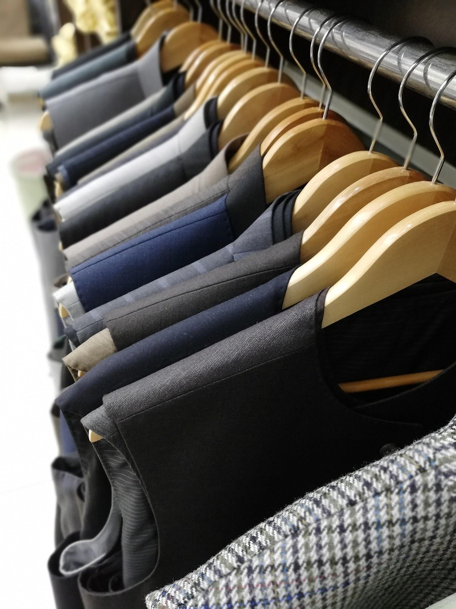
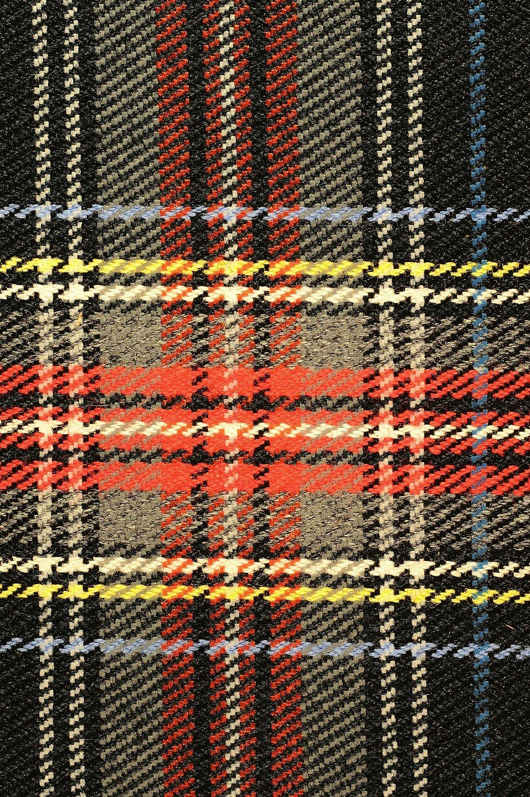
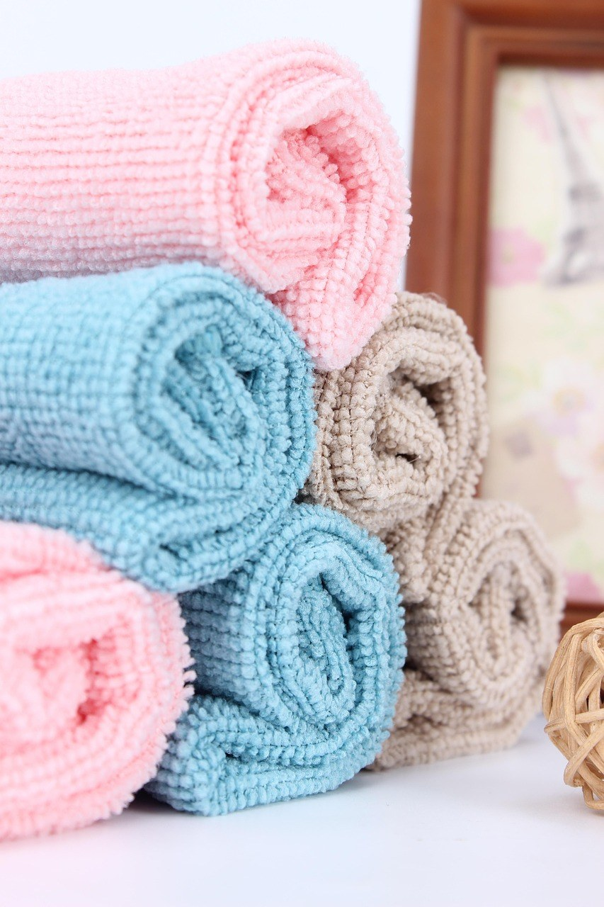

[사진 1: 썸네일]
세탁소에 맡기자니 한 벌에 비용이 꽤 들고, 집에서 빨자니 줄어들까 봐 망설여지는 게 울 코트예요.
울 코트 세탁은 몇 가지 실수만 피하면 훨씬 안전해져요. 집에서 빨 때 많이 하는 실수 5가지와, 각각 대신 어떻게 하면 되는지 순서대로 정리해 드릴게요.
[사진 2]
📷 [직접 찍은 사진 넣기: 집에 있는 코트 안쪽 케어라벨을 가까이 찍은 모습]
같은 울 코트라도 울 함량, 안감 소재, 심지(형태를 잡아 주는 속감)에 따라 제조사가 정한 세탁법이 달라요. 그래서 울 코트 세탁의 첫 단계는 옷 안쪽 케어라벨 확인이에요.
대야에 손이 그려진 표시와 온도가 있으면 손세탁이 가능하다는 뜻이고, 대야에 X 표시가 있으면 물세탁 금지예요. 동그라미 안에 글자가 있는 드라이클리닝 표시만 있다면 세탁소에 맡기는 편이 안전해요.
✍️ [내 경험 한두 줄: 우리 집 겨울 코트는 몇 벌이고, 보통 얼마나 자주 세탁소에 맡기나요?]
울이 줄어드는 현상을 펠팅이라고 해요. 울 섬유 겉면의 비늘 같은 결이 열과 마찰을 받으면 서로 엉겨 붙으면서 옷이 작고 두꺼워져요. 한 번 엉긴 섬유는 원래대로 되돌리기 어려워요.
물은 30도 이하 미지근한 물을 쓰고, 라벨에 더 낮은 온도가 적혀 있으면 그 온도를 따르세요.
[사진 3]
울은 단백질 섬유라 알칼리성이 강한 일반 세제보다 울 전용이나 중성세제가 잘 맞아요. 섬유유연제는 섬유를 코팅해 통기성을 떨어뜨릴 수 있어 넣지 않는 게 좋아요.
빨 때는 비비지 말고 손바닥으로 지그시 눌렀다 떼는 방식으로 해요. 목 둘레나 소매 끝처럼 때가 잘 타는 곳만 부드러운 솔로 결 방향을 따라 살살 정리하세요.
[사진 4]
📷 [직접 찍은 사진 넣기: 빨래 건조대 위에 큰 수건을 평평하게 펼쳐 둔 모습]
물을 먹은 울 코트는 생각보다 무거워요. 비틀어 짜면 섬유가 늘어나고, 젖은 채 옷걸이에 걸면 무게 때문에 어깨와 길이가 처질 수 있어요.
큰 수건 위에 코트를 펼쳐 올리고 함께 돌돌 말아 눌러 물기를 빼세요. 세탁기 탈수를 쓴다면 세탁망에 넣고 아주 짧게만 돌려요. 그다음 건조대 위에 눕혀 모양을 잡고, 직사광선과 열풍을 피해 그늘에서 말려요.
코트는 매일 빨래하는 옷이 아니에요. 자주 빨수록 수축과 변형 위험이 커지니, 평소에는 겉 먼지를 털고 부분만 관리하는 편이 오래 입는 방법이에요.
입고 들어오면 옷솔로 위에서 아래로, 결 방향을 따라 먼지를 털어 주세요. 구김은 스팀다리미를 옷에서 살짝 띄워 김만 쐬어 주면 펴지고, 냄새도 어느 정도 빠져요.
✍️ [내 경험 한두 줄: 외출하고 돌아오면 코트는 주로 어디에 걸어 두나요? (현관/옷장/의자)]
Q. 세탁기 울 코스로 돌려도 되나요?
A. 라벨에 세탁기 사용이 가능하다고 되어 있을 때만이에요. 그럴 때도 세탁망에 넣고 저온·저회전 울 코스로, 탈수는 짧게 해 주세요.
Q. 이미 줄어든 코트는 되돌릴 수 있나요?
A. 니트는 린스를 푼 미지근한 물에 담갔다가 살살 늘리는 방법이 알려져 있지만, 안감과 심지가 있는 코트는 효과가 확실하지 않아요. 아끼는 코트라면 세탁소에 상담하는 편이 나아요.
Q. 세탁소 비닐을 씌운 채 보관해도 되나요?
A. 비닐은 통풍이 안 돼 습기가 찰 수 있어요. 집에 가져오면 비닐을 벗기고, 먼지가 걱정되면 통기성 있는 부직포 커버를 씌우세요.
정리하면, 울 코트 세탁은 라벨 확인이 먼저예요. 물세탁 표시가 있으면 30도 이하 미지근한 물, 중성세제, 눌러 빨기, 눕혀 말리기만 지키고, 드라이클리닝 표시면 세탁소에 맡기세요. 평소엔 옷솔과 스팀으로 관리하면 통째로 빠는 횟수를 줄일 수 있어요.
여러분은 코트를 집에서 빨아 본 적 있나요? 성공담이나 실패담이 있다면 댓글로 나눠 주세요.
인스타그램 @todayzip.info 에서 살림 꿀팁을 30초 영상으로도 볼 수 있어요.